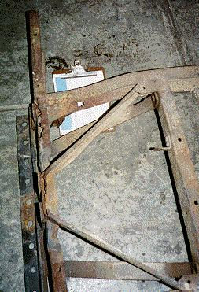
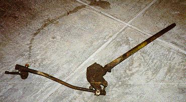

{kind=link}

by: Terry L. Howe
A complete disassembly of this flat fender revealed several problems that were not immediately apparent. The biggest problems are with the tub and the frame. It was quite obvious that the engine was toast from the beginning.
The good news was the axles, transfer case, over drive, and transmission all appeared to be in excellent shape. Close inspection of the axles, transfer case, and transmission all revealed a build date in 1950. The title I got with the Jeep was for a '50 CJ-3A, so these were probably parts from that Jeep.
Axles
The '50 CJ-3A used a Dana 25
front end and Dana 41 rear end.
The Dana 25 use small 9" drums and is a closed knuckle axle. The Dana
41 is fairly stoat, but it uses 10 spline shafts of two piece design,
and it uses small 9" drums. Since I wanted to use an open knuckle
Dana 30 or Dana 44 front end with disk brakes and a rear Dana 44
with one piece shafts, the axles were sold.
Springs
It looked like the front springs had been replaced at some time, but the rears were probably original. The leaves on the rear springs were all rounded off from rust and an add-a-leaf suspension lift had been installed. The add-a-leaf style suspension lift doesn't give too much lift and just tends to stiffen the ride. One of the newer front springs also suffered from a broken main leaf. I ended up just giving them away.
|  |
| The frame was rusted all the way through in a few spots. |
Frame
|
| The passenger side frame rail had a noticable bend in it. |
 |
| The frame horns were weled up with all sorts of unusual pieces of scrap |
Transmission and Transfer Case
The '50 CJ-3A also used a Dana 18 transfer case and T-90 three speed. The T-90 had a Chevy adapter on it to mate with the Buick 231 that was installed in the flat fender. The transmission, transfer case, and overdrive were all sold to finance purchases of other parts more to my liking. The T-90 is a fairly light duty unit, not really strong enough or geared low enough for rock crawling. The transfer case is the small hole version with the 1 1/8" intermediate shaft, I wanted to use the stronger big hole Dana 18 with 1 1/4" intermediate shaft. Since the overdrive was 26 tooth and only for a small hole transfer case, it too was sold. |
| A very tired Buick 225. |
Engine
The engine was pulled and set on the garage floor. It will be stripped of usable parts and sent to the scrap yard. The heads, headers, and intake still appear to be in good shape and should be worth some money
Tub
 |
| The bttom of the tub was worse than moldy swiss cheese |
 |
| Serial number plate and hole in fire wall |
 |
| The hood was cut up and filled with rust holes |
The entire body was attached to the frame with 5 bolts. Two of them were on the grill and three of them on the tub. A three inch wood block body lift was installed, a few of the blocks were split or missing.
Despite all the damage, I am going to try to save the tub, fenders, hood, grill, and wind shield. There will be a lot of sheet metal work to do it, but locating a good tub inexpensively has proven to be extremely difficult.
Interior
The two seats that were installed in the flat fender were mismatched and badly damaged. One was full of seeds and such and must have been home or a mouse or other rodent at one time. The seats were broken down and dragged out to the trash pile. Many gauges were stuffed through the a custom built dash, some of them may be salvageable. The original dash was so hacked up, an entirely new dash will need to be built.
Steering
|  |
| Stock Ross steering box, column, and linkage |
Brakes/Clutch
The clutch used basically original linkage with the pedal through the floor, but the brakes had suffered a frightening bit of fabrication. The original frame mounted master cylinder was removed and replaced with a fire wall mounted single reservoir master cylinder. A swing arm pedal was installed and the master cylinder was "held on" with threaded rod. The swing arm pedal may be retained, but the master cylinder and mount will definitely have to be replaced.
Tires
I was lucky enough to give away the tires to the guy that bought my transfer case. The 10" chrome rims were too wide for my needs and they were rusty. A 12.5" wide tire seems to ride much better on an 8" rim. You get a good sidewall bulge and the tire almost never blows a bead when wheeling. The 35s were bigger than I wanted to go and they were bald and rubber rotted. I don't know how the previous owner drove the thing with 35s and the small drums. The turning radius was terrible because the tires hit the frame rail with about half a turn of the steering wheel.
What's Next
I ended up selling about everything I didn't want for about $750, nearly twice what I paid for the Jeep. All that and more will probably go into buying parts more suitable to my needs.
 |
| Someone with a torch had done a lot of damage around the rear of the body and the cross member |
{kind=link}